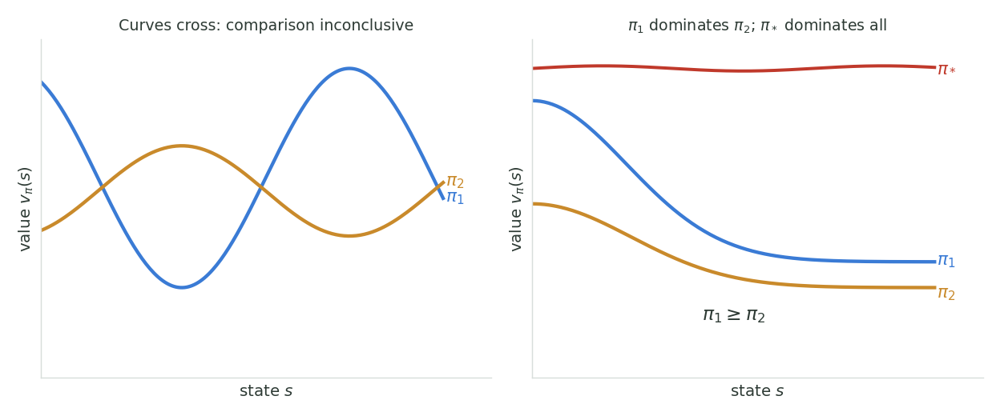

Bellman Equations & Optimality
The state-value Bellman equation
Recall two facts. The return is the discounted sum of future rewards, $G_t = \sum_{k=0}^{\infty} \gamma^{k} R_{t+k+1}$, and it satisfies the recursion $G_t = R_{t+1} + \gamma\, G_{t+1}$. Substituting that recursion into the definition of the state value is the whole trick:
Now we expand that expectation in two stages, both instances of the law of total expectation. In the convenient nested form it reads $\mathbb{E}[X] = \mathbb{E}_Y\big[\,\mathbb{E}[X \mid Y]\,\big]$: averaging $X$ over a conditioning variable $Y$, weighted by $Y$'s distribution, recovers the plain average of $X$.
Stage 1, condition on the action. Take $Y_1 = A_t$. The action is drawn from the policy with probability $\pi(a \mid s)$, so
Stage 2, condition on the next state and reward. Now apply the law of total expectation a second time inside that conditional expectation, this time with $Y_2 = (S_{t+1}, R_{t+1})$. Given the current state $s$ and action $a$, the pair $(s', r)$ occurs with probability $p(s', r \mid s, a)$, so the expectation becomes a sum over every next-state/reward pair, weighted by those dynamics:
Inside the sum we can simplify the conditional expectation term by term. By linearity it splits into two pieces:
- The first piece is trivial: we are already conditioning on $R_{t+1} = r$, so the reward is a known constant and its expectation is just $r$.
- The second piece uses the Markov property. The return $G_{t+1}$ is built from rewards after step $t+1$, and given the next state $S_{t+1} = s'$ those future rewards no longer depend on how we got there ($s$, $a$, or $r$). So the long list of conditions collapses to a single one, $S_{t+1} = s'$, and $\mathbb{E}_\pi[\,G_{t+1} \mid S_{t+1} = s'\,]$ is, by the very definition of the value function, $v_\pi(s')$.
Each conditional expectation therefore reduces to $r + \gamma\, v_\pi(s')$. Substituting this back, the inner expectation from Stage 1 is
and folding that into the Stage 1 sum over actions gives the full expansion:
That last line is the Bellman equation for $v_\pi$:
Read it as an average over one step. Pick an action from the policy; the environment hands back a reward $r$ and a next state $s'$; the value of $s$ is the reward you get plus the discounted value of wherever you land, averaged over everything that is random. The value of a state is written in terms of the values of its possible successor states.
The Bellman equation is a linear system
Here is what makes the Bellman equation so useful: for a fixed policy it is linear in the unknown values $v_\pi(s)$. Writing one Bellman equation per state gives a system of simultaneous linear equations, one unknown per state, which can be solved directly.
A tiny example makes this tangible. Imagine a state $A$ under the uniform random policy over four moves, with $\gamma = 0.7$, where moving right goes to $B$ with reward $+5$, moving down goes to $C$, and the up and left moves bump a wall and stay in $A$ with $0$ reward. Plugging into the Bellman equation, the inner sum over $(s', r)$ collapses to a single term per action (this gridworld is deterministic), leaving
This is one equation in the unknowns $v_\pi(A), v_\pi(B), v_\pi(C)$. Write the analogous equation for every state and you get a closed linear system; solving it yields the exact value of every state. That is precisely how the $5 \times 5$ gridworld table in Part 1 was computed.
The action-value Bellman equation
The action-value function deserves its own derivation rather than a wave at the previous one. The two definitions condition on different things, and that single difference is what drives the policy sum from the outside of the equation to the inside. Watching it happen is the point.
Start from the definition. The action value pins down both the state and the first action, and only afterwards follows $\pi$:
Compare that with where the $v_\pi$ derivation began. There, Stage 1 was a sum over actions, because $A_t$ was still random and had to be averaged out under $\pi(a \mid s)$. Here $A_t = a$ is given. There is nothing to average at time $t$, so that stage does not exist at all and the derivation starts one step further in.
Stage 1, condition on the next state and reward. The only randomness left in the first step belongs to the environment. Apply the law of total expectation with $Y = (S_{t+1}, R_{t+1})$, whose distribution given $(s,a)$ is exactly the dynamics $p(s', r \mid s, a)$:
The inner expectation splits by linearity and collapses for the same two reasons as before: we are conditioning on $R_{t+1} = r$, so the first term is the known constant $r$; and by the Markov property the tail $G_{t+1}$ forgets $s$, $a$ and $r$ the moment $S_{t+1} = s'$ is known, leaving $\mathbb{E}_\pi[\,G_{t+1} \mid S_{t+1} = s'\,] = v_\pi(s')$. Hence
Call this the mixed form. It is already a Bellman equation, but not a self-contained one: the right-hand side is $v_\pi$, not $q_\pi$, so the recursion does not close. One more step is needed.
Stage 2, the bridge back from $v_\pi$ to $q_\pi$. Apply the law of total expectation a final time, now one tick later, conditioning on the action $A_{t+1}$ that the policy will draw in $s'$:
The last line is nothing but the definition of $q_\pi$, read at time $t+1$ instead of $t$. In words: the value of a state is the policy-weighted average of the action values available in it. Substituting this bridge into the mixed form closes the recursion and gives the Bellman equation for $q_\pi$:
The two identities we passed through on the way are worth keeping in their own right:
They convert freely between the two value functions, and every Bellman equation in this post is one substituted into the other. Put the right-hand identity into the left one and you recover the $v_\pi$ equation from the top of the page; put the left one into the right and you get the boxed $q_\pi$ equation above. Two conditionings, two orders, four equations.
Optimal policies
The goal of RL is not just to evaluate a given policy, but ultimately to find a policy that earns as much reward as possible in the long run. To search for the best policy we first need a way to compare two policies and say which is better. So: what does it even mean for one policy to be better than another?
The natural answer is to compare their value functions. We say policy $\pi_1$ is at least as good as $\pi_2$, written $\pi_1 \ge \pi_2$, exactly when its state value is at least as high in every state:
The phrase "in every state" is the subtle part. This is only a partial order: two policies need not be comparable at all. If $\pi_1$ scores higher in some states while $\pi_2$ scores higher in others, their value curves cross and neither is $\ge$ the other. The comparison is simply inconclusive (left panel below). A policy counts as better only when it dominates the other everywhere (right panel).

An optimal policy is one that is at least as good as every other policy: its value function dominates all others everywhere. We write $\pi_*$ for any such policy (there can be more than one, but they all share the same value function, see below).
Optimal value functions
All optimal policies share the same state-value function, the optimal state-value function $v_*$, defined as the best value achievable in each state over all policies:
Likewise they share the same optimal action-value function $q_*$:
The Bellman optimality equations
For a general MDP we cannot brute-force every policy to find $v_*$, so we need equations that $v_*$ and $q_*$ satisfy directly. The derivation starts from the ordinary Bellman equation, now written for an optimal policy $\pi_*$:
Now use the fact from the previous section: there always exists an optimal deterministic policy. Such a policy assigns probability $\pi_*(a \mid s) = 1$ to the single action that achieves the highest value, and $0$ to every other action. So the weighted sum $\sum_a \pi_*(a \mid s)[\,\cdots\,]$ keeps exactly one term, the term for the best action, and discards the rest. Selecting the single largest term is precisely what $\max_a$ does:
That replacement turns the equation above into the Bellman optimality equation for $v_*$:
Making the very same replacement (the inner $\sum_{a'} \pi_*(a' \mid s') \to \max_{a'}$) in the action-value Bellman equation gives the Bellman optimality equation for $q_*$:
The difference between $v_\pi$ and $v_*$ is the difference between averaging over the policy's actions and taking the best one. Unlike the policy-specific Bellman equations these are non-linear (the $\max$ is not linear), which is why solving them needs the iterative methods of dynamic programming rather than a single matrix solve.
Extracting the optimal policy from the optimal value functions
Once we have an optimal value function, reading off the optimal policy is a greedy lookup, but the amount of work depends on which optimal value function we hold.
From $v_*$ (one-step lookahead needed). The optimal state-value function only tells us how good each state is, not how good each action is. To compare actions we have to look one step ahead through the dynamics, evaluating, for every action, the bracketed term of the Bellman optimality equation and keeping the action that maximises it:
Having $v_*$ means we do not have to search any deeper than this single step: the discounted value of every possible next state $s'$ is already baked into $v_*(s')$. But we still need the model $p$ and one layer of lookahead, because $v_*$ alone does not rank the actions.
From $q_*$ (no lookahead, no model). The optimal action-value function already encodes the value of each action, so choosing the best one is a plain $\arg\max$ over the actions in that state, with no dynamics and no search at all:
How the discount factor shapes the optimal policy
One subtlety worth internalising: which policy is optimal can depend on $\gamma$. Consider a state $X$ with two actions. Action $A_1$ yields $+1$ after one step (and the cycle repeats every two steps); action $A_2$ yields $+2$, but only after two steps. The two policies have closed-form values

At $\gamma = 0$ the agent is myopic, only the immediate reward counts, so $\pi_1$ (grab the $+1$ now) is optimal. As $\gamma$ grows past $0.5$ the larger delayed reward wins and $\pi_2$ becomes optimal. The discount factor is not just a convergence trick; it is part of the problem definition, and it can change the answer.
Next up in the course: now that we know what we want ($v_*$, $q_*$, and the Bellman optimality equations they satisfy), Week 4 turns to dynamic programming, beginning with the iterative policy-evaluation algorithm that actually computes $v_\pi$.